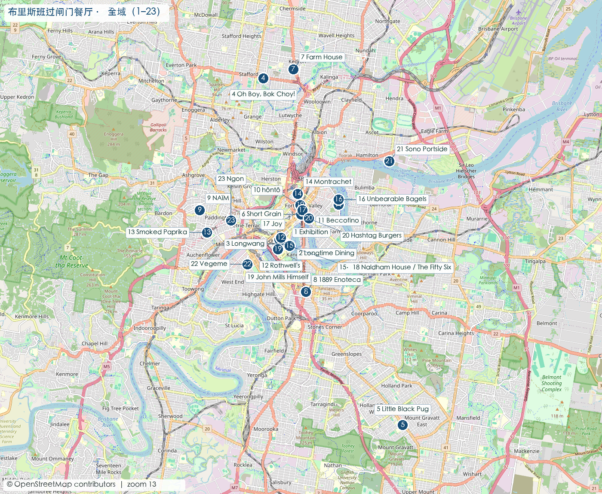
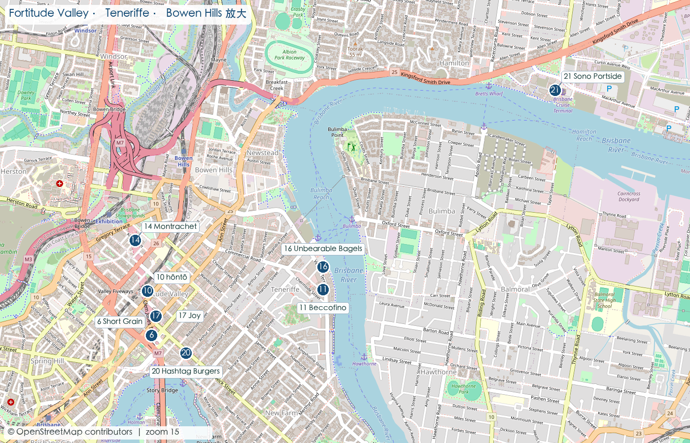
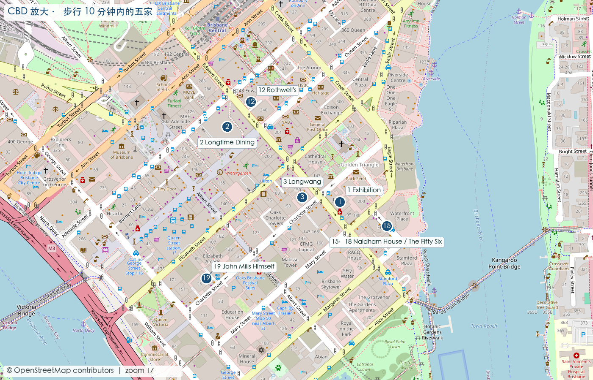
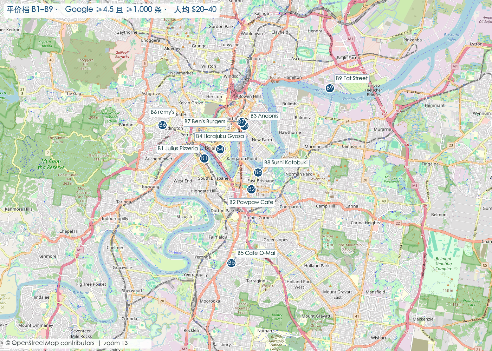
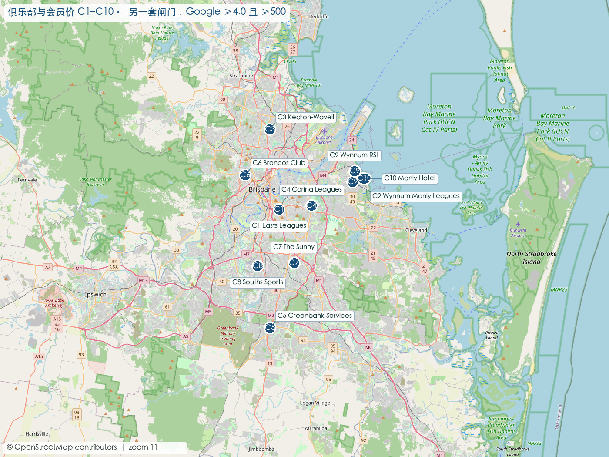

核查日 2026-09-28（俱乐部、华人菜系、饮品、海鲜、Pub 五节 2026-09-29）· 价格均为 AUD
共 300+ 家：过闸门 25 家 ＋ 五档价位阶梯 50 条 ＋ 俱乐部 10 家 ＋ 亚洲餐饮按商场楼层与菜系 70+ 家 ＋ 奶茶饮品 8 家 ＋ 海鲜市场 10 家 ＋ Pub 每周特价 7 家
每一家店名和地址都链到 Google 地图，点开即可导航。
The commentary is in Chinese; venue names, addresses, prices and ratings are all in English, and every section heading carries an English subtitle. Here is what the labels mean.
| Label | Meaning |
|---|---|
| 4.8／1,186 | Google rating / number of reviews. Live values unless marked otherwise. |
| ★ | Clears the main gate: Google ≥ 4.7 and ≥ 200 reviews. |
| 官网 | Official — price read off the venue's own site or ordering page. Safe to budget with. |
| Google 众报 | Crowd-reported band — Google Maps' "$X–Y per person, reported by N people". For comparison, not a bill. |
| 评论照片／第三方 | Review photo / third-party — lower confidence. Third-party set-menu prices proved systematically stale; treat as a floor. |
| 未查到 | Not found — genuinely could not be retrieved. Never a guess. |
| 人均 / 未过闸门 | Per person / did not clear that category's gate. |
Each category has its own stated gate, loosened or tightened for a reason given in that section — coffee and drinks are tightened (ratings run high), community cuisines and clubs are loosened (fewer English reviews; club scores rate the whole venue). The full rationale is in METHOD.md.
Everything here expires. Checked 28–29 Sep 2026. Re-verify prices and hours against the venue's own page.
价位有两种来源，分开标、不混用：官网＝商家菜单实价；Google 众报＝Google Maps 的「$X–Y per person · reported by N people」；评论照片＝Google 评论里的实体菜单照片。每家店名都链到 Google 地图。★ ＝过了主闸门（Google ≥4.7 且 ≥200），同价位里优先选它们。
咖啡、素食、快食。前四家都过了主闸门（Google ≥4.7 且 ≥200）——最便宜的一档反而不用降标准。
| 店 | 菜系 | 价格 | 备注 | |
|---|---|---|---|---|
| John Mills Himself 40 Charlotte St, Brisbane City QLD 4000 | 咖啡／小酒吧 | 4.8／1,120 | $1–20 Google 众报 | CBD 老砖巷里的小店，白天咖啡晚上酒 |
| Vegeme Shop 9/220 Melbourne St, South Brisbane QLD 4101 | 素食／越南素 | 4.7／1,001 | $1–20 Google 众报 | South Brisbane，全城最便宜的过闸门正餐 |
| Death Before Decaf 3/760-766 Brunswick St, New Farm QLD 4005 | 咖啡（24 小时） | 4.7／1,571 | $1–20 Google 众报 | New Farm，本档样本量最大 |
| Bunker Coffee 21 Railway Ter, Milton QLD 4064 | 咖啡 | 4.7／721 | $1–20 Google 众报 | Milton，铁路旁 |
| Vege Rama Shop 1/241 Adelaide St, Brisbane City QLD 4000 | 素食／纯素 | 4.6／646 | $1–20 Google 众报 | ANZAC Square 地下，午市快食；4.6 未过主闸门 |
本档用另一套明确标注的闸门：Google ≥4.5 且 ≥1,000 条（评分降 0.2，样本量从 200 提到 1,000 作补偿）。带 ★ 的是过了主闸门、不必降标准的。
| 店 | 菜系 | 价格 | 备注 | |
|---|---|---|---|---|
| Hashtag Burgers and Waffles ★ Shop 3/477 Brunswick St, Fortitude Valley QLD 4006 | 汉堡／华夫 | 4.7／2,154 | 汉堡 $15.5–35 · loaded fries $19–23 · 奶昔 $10 评论照片 | 过主闸门 |
| Ngon Brisbane ★ 183 Given Tce, Paddington QLD 4064 | 越南 | 4.7／648 | 小盘 $16–18 · 大盘 $26–32 · 汤面 $24 官网 | 过主闸门；姜汁焦糖鸭 $32 |
| Little Black Pug ★ Logan Rd, Mount Gravatt Central QLD 4122 | Brunch | 4.8／1,663 | $9–31 官网 | 过主闸门；Dog's Breakfast $31 |
| Unbearable Bagels ★ 39 Vernon Tce, Teneriffe QLD 4005 | 贝果 | 4.7／333 | 贝果 $17–20 · 抹酱 $6–13 官网 | 过主闸门 |
| Farm House, Kedron ★ 9 Somerset Rd, Kedron QLD 4031 | 全日咖啡馆 | 4.7／2,981 | $25.5–28.5 官网 | 过主闸门 |
| Smoked Paprika ★ 2/5 Nash St, Paddington QLD 4064 | 匈牙利早餐 | 4.7／924 | 早餐 $13.9–29.9 · 午餐 $16.9–27.9 官网 | 过主闸门 |
| NAÏM ★ 14 Collingwood St, Paddington QLD 4064 | 中东 | 4.7／1,849 | 早午餐 $14–29 官网 | 过主闸门；晚餐 banquet 未上价 |
| Julius Pizzeria 77 Grey St, South Brisbane QLD 4101 | 那不勒斯披萨 | 4.6／4,009 | $20–40 Google 众报 | 本档样本量最大 |
| Pawpaw Cafe 898 Stanley St E, Woolloongabba QLD 4102 | 早午餐／东南亚 | 4.6／3,470 | $20–40 Google 众报 | |
| Sushi Kotobuki 3/53 Lytton Rd, East Brisbane QLD 4169 | 寿司 | 4.6／1,042 | $20–40 Google 众报 | East Brisbane |
| Andonis Cafe & Bar 28/32 Robertson St, Fortitude Valley QLD 4006 | 咖啡馆／全日 | 4.5／3,313 | $20–40 Google 众报 | ⚠️ 镜像还是 4.6，实时已掉到 4.5 |
| Harajuku Gyoza 141 Queen St, Brisbane City QLD 4000 | 日式煎饺 | 4.5／2,237 | $20–40 Google 众报 | CBD Albert Lane |
| Cafe O-Mai 15 Cracknell Rd, Annerley QLD 4103 | 越南／咖啡馆 | 4.5／1,882 | $20–40 Google 众报 | Annerley，要专程开车 |
| remy's 106 Latrobe Tce, Paddington QLD 4064 | 汉堡／早午餐 | 4.5／1,326 | $20–40 Google 众报 | Paddington |
| Ben's Burgers 5 Winn St, Fortitude Valley QLD 4006 | 汉堡 | 4.5／1,283 | $20–40 Google 众报 | Fortitude Valley |
| Eat Street Northshore 221D MacArthur Ave, Hamilton QLD 4007 | 夜市（80 个货柜摊） | 4.6／15,638 | 另收入场费 Google 众报 | 全城最大样本，但只在特定夜晚开，要另买票 |
一顿正经晚餐、但不到「纪念日」的价位。这一档里官网套餐价最透明。
| 店 | 菜系 | 价格 | 备注 | |
|---|---|---|---|---|
| Short Grain ★ 15 Marshall St, Fortitude Valley QLD 4006 | 泰菜 | 4.8／606 | 套餐 $55／$85／$125 · 咖喱 $55–75 官网 | 过主闸门；周日 +10% |
| Oh Boy, Bok Choy! ★ 264 Stafford Rd, Stafford QLD 4053 | 东南亚 | 4.8／1,991 | banquet $62.5 · 周末长午餐 $89（含 2 小时酒水） 官网 | 过主闸门 |
| 1889 Enoteca ★ 10-12 Logan Rd, Woolloongabba QLD 4102 | 罗马菜 | 4.7／2,341 | 意面 $25–38 · 主菜 $39–100 官网 | 过主闸门；cacio e pepe $25 |
| Beccofino ★ 10 Vernon Tce, Teneriffe QLD 4005 | 意式柴烧披萨 | 4.7／1,220 | 披萨 $28.5–36.5 · 意面 $35–39.5 官网 | 过主闸门 |
| Longtime Dining ★ L1, 226 Queen St, Brisbane City QLD 4000 | 精致粤菜／点心 | 4.8／4,821 | $40–120（众报）· 点心 $15–47（照片） 评论照片 | 过主闸门；朗廷八寶 $47 |
| Chu The Phat 111 Melbourne St, South Brisbane QLD 4101 | 港／韩／台 | 4.5／3,477 | $40–80 Google 众报 | 未过主闸门 |
| Bird's Nest 2 Edmondstone St, South Brisbane QLD 4101 | 日式串烧 | 4.5／1,736 | $40–60 Google 众报 | 未过主闸门 |
| Happy Boy East St, Fortitude Valley QLD 4006 | 粤式烧腊 | 4.4／1,498 | $20–80（众报）· banquet $50（第三方） Google 众报 | 未过主闸门 |
| El Camino Cantina 153 Stanley St, South Brisbane QLD 4101 | 墨西哥 | 4.5／5,548 | $20–100 Google 众报 | 未过主闸门，但样本量极大 |
河景、酒店、大型宴席都在这一档。注意：这一档里过主闸门的只有 5 家。
| 店 | 菜系 | 价格 | 备注 | |
|---|---|---|---|---|
| The Fifty Six ★ Level 2/33 Felix St, Brisbane City QLD 4000 | 现代粤菜 | 4.7／207 | Short Set $82 · Long Set $120（配酒 +$80／+$118） 官网 | 过主闸门 |
| Longwang ★ 144 Edward St, Brisbane City QLD 4000 | 现代泛亚 | 4.8／2,118 | Jade $88 · Dragon's $122 · Claw Feast $149 官网 | 过主闸门；公假 +20% |
| hôntô ★ Alden St, Fortitude Valley QLD 4006 | 现代日料 | 4.7／1,603 | banquet $89／$130 · 单点 $6–110 官网 | 过主闸门 |
| Montrachet ★ 1/30 King St, Bowen Hills QLD 4006 | 法餐 | 4.7／890 | 前菜 $26–33 · 主菜 $46–82 官网 | 过主闸门 |
| Sono Japanese Portside ★ 39 Hercules St, Hamilton QLD 4007 | 日料 | 4.7／2,388 | 未查到 未查到 | 过主闸门；AGFG 12 分 |
| Agnes 22 Agnes St, Fortitude Valley QLD 4006 | 全柴火烧烤 | 4.6／1,376 | 套餐 $89／$139 · 单点主菜 $38–380 官网 | 未过主闸门；AGFG 14 分、GT 收录 |
| GRECA 3/5 Boundary St, Brisbane City QLD 4000 | 希腊 | 4.6／3,353 | $60–140（众报）· 整条珊瑚鳟 $240 Google 众报 | 未过主闸门；8 人以上 +7% 服务费 |
| Yoko Dining 2/5 Boundary St, Brisbane City QLD 4000 | 日式居酒屋 | 4.5／1,954 | $60–140 Google 众报 | 未过主闸门 |
| Southside Restaurant 63 Melbourne St, South Brisbane QLD 4101 | 亚洲 tapas | 4.5／1,268 | $60–140 Google 众报 | 未过主闸门 |
| Hellenika Level 1/48 James St, Fortitude Valley QLD 4006 | 希腊 | 4.2／1,416 | $60–160 Google 众报 | 未过主闸门；The Calile 酒店内 |
| Donna Chang Suite 3/171 George St, Brisbane City QLD 4000 | 粤菜／川菜 | 4.4／1,830 | $40–160 Google 众报 | 未过主闸门；老银行大楼 |
| Madame Wu Upper Plaza Level, 71 Eagle St, Brisbane City QLD 4000 | 泛亚 | 4.5／2,385 | $80–160 Google 众报 | 未过主闸门 |
| Supernormal Brisbane 443 Queen St, Brisbane City QLD 4000 | 现代亚洲 | 4.5／468 | $80–180 Google 众报 | 未过主闸门；GT 2026 收录 |
| OTTO Ristorante River Quay, Shop 1 Sidon St, South Brisbane QLD 4101 | 意大利 | 4.2／1,471 | $80–200 Google 众报 | 未过主闸门；河景 |
| Rothwell's Bar & Grill ★ 235 Edward St, Brisbane City QLD 4000 | 老派 grill | 4.7／1,067 | $80–200（众报）· Beef Wellington 600g $134（照片） 评论照片 | 过主闸门 |
品尝菜单与高端牛排。三套评分口径同时点名的两家（Exhibition、Joy）都在这一档。
| 店 | 菜系 | 价格 | 备注 | |
|---|---|---|---|---|
| Exhibition ★ Basement 2/109 Edward St, Brisbane City QLD 4000 | 现代澳菜 omakase | 4.9／397 | $255 平日／$335 周末 · 配对 $90–340 官网 | 主闸门第一 · AGFG 18 分 · GT 收录 |
| Joy ★ Shop 7, 694 Ann St, Fortitude Valley QLD 4006 | 10 座品尝菜单 | 4.7／215 | $220 官网 | 过主闸门 · AGFG 17 分 · GT 收录 |
| SK Steak & Oyster The Calile Hotel, G.12/48 James St, Fortitude Valley QLD 4006 | 牛排／生蚝 | 4.4／717 | $200+ Google 众报 | 未过主闸门；The Calile 酒店内 |
| Longwang ★ 144 Edward St, Brisbane City QLD 4000 | 现代泛亚（Claw Feast） | 4.8／2,118 | $149（整只活泥蟹＋和牛） 官网 | 本档最便宜的「大菜」 |
| Agnes 22 Agnes St, Fortitude Valley QLD 4006 | 全柴火烧烤（长餐） | 4.6／1,376 | $139 · 9+ Kiwami 和牛短腰脊 $380 官网 | 单道菜全城最贵 |
排序：Google 评分降序，同分按评论数降序。编号与下方地图上的针号一致（24、25 是从市议会 8,046 家持牌名录里随机抽样抓到的，不在任何餐饮榜单上）。评分取自 Wanderlog 对 Google Maps 的镜像页（会比实时值滞后）。
| # | 店 | 菜系 | 价格 | 地址 | |
|---|---|---|---|---|---|
| 1 | Exhibition | 现代澳菜 omakase | 4.9／397 | $255/人平日 · $335/人周末（含 $80 餐饮额度）；配对 $90–340 官网 | Basement 2/109 Edward St, CBD |
| 2 | Longtime Dining | 精致粤菜／点心 | 4.8／4,749 | 未查到 官网菜单页渲染为空白 | L1, 226 Queen St（Queens Plaza） |
| 3 | Longwang | 现代泛亚 | 4.8／2,118 | Jade $88｜Dragon's $122｜Claw Feast $149 每位 官网 周末 +10%，公假 +20% | 144 Edward St, CBD |
| 4 | Oh Boy, Bok Choy! | 东南亚（越/泰/马/中） | 4.8／1,991 | Banquet $62.5/人；周五至周日午餐 Bubbles&Bao $89/人（含 2 小时酒水）；单点 $12.9–42.5 官网 周末 +5%，公假 +16.5% | 264 Stafford Rd, Stafford |
| 5 | Little Black Pug | Brunch | 4.8／1,663 | 单点 $9–31（Dog's Breakfast $31）官网 | Logan Rd, Mount Gravatt Central |
| 6 | Short Grain | 泰菜 | 4.8／606 | 套餐 $55／$85／$125 每位；咖喱 $55–75 官网 周日 +10%，公假 +15%；周一二休 | 15 Marshall St, Fortitude Valley |
| 7 | Farm House, Kedron | 全日咖啡馆 | 4.7／2,981 | 主食 $25.5–28.5 官网 周末 +5%，公假 +16.5% | 9 Somerset Rd, Kedron |
| 8 | 1889 Enoteca | 罗马菜／意大利自然酒 | 4.7／2,341 | 意面 $25–38、前菜 $21–35、主菜 $39–100 官方点单页 | 10–12 Logan Rd, Woolloongabba |
| 9 | NAÏM | 中东（多素、清真友好） | 4.7／1,849 | 早午餐 $14–29 官方点单页；晚餐 banquet 未上价 | 14 Collingwood St, Paddington |
| 10 | hôntô | 现代日料 | 4.7／1,603 | Banquet $89 或 $130 每位；单点 $6–110 官网 周末 +10%，公假 +15% | Alden St, Fortitude Valley |
| 11 | Beccofino | 意式柴烧披萨 | 4.7／1,220 | 披萨 $28.5–36.5、意面 $35–39.5、主菜 $48.5–60 官网 周日 +10%，公假 +15% | 10 Vernon Tce, Teneriffe |
| 12 | Rothwell's Bar & Grill | 老派 grill | 4.7／1,048 | 未查到 官网菜单 PDF 实测 404 | 235 Edward St, CBD |
| 13 | Smoked Paprika | 匈牙利式早餐 | 4.7／924 | 早餐 $13.9–29.9、午餐 $16.9–27.9 官网 | 2/5 Nash St, Paddington（Rosalie） |
| 14 | Montrachet | 法餐 | 4.7／890 | 前菜 $26–33、主菜 $46–82、甜点 $20–26 官网；6 道 degustation $150 第三方 公假 +15% | 1/30 King St, Bowen Hills |
| 15 | Naldham House | Brasserie／酒吧（一栋四店） | 4.7／432 | 未查到 The Brasserie 无独立菜单页 | Mary St × Felix St, CBD |
| 16 | Unbearable Bagels | 贝果＋黑咖啡 | 4.7／333 | 贝果 $17–20、抹酱款 $6–13 官方点单页 | 39 Vernon Tce, Teneriffe |
| 17 | Joy | 10 座位品尝菜单 | 4.7／215 | $220/人 官网（写明随市价变动） | Shop 7, 694 Ann St（Bakery Lane） |
| 18 | The Fifty Six | 现代粤菜 | 4.7／207 | Short Set $82/人（配酒 +$80）｜Long Set $120/人（配酒 +$118）；点心 $18–20、主菜 $32–62 官网 | Level 2/33 Felix St（Naldham House 顶层） |
| 19 | John Mills Himself | 咖啡／小酒吧 | 4.8／1,120 实时 | Google 众报人均 $1–20；单价 未查到 | 40 Charlotte St, CBD |
| 20 | Hashtag Burgers and Waffles | 汉堡／华夫 | 4.7／2,154 实时 | 汉堡 $15.5–35、loaded fries $19–23、华夫 $16.5、奶昔 $10 Google 评论照片 | Shop 3/477 Brunswick St, Fortitude Valley |
| 21 | Sono Japanese Portside | 日料 | 4.7／2,388 实时 | 未查到（AGFG 12 分） | 39 Hercules St, Hamilton |
| 22 | Vegeme | 素食／越南素 | 4.7／1,001 实时 | Google 众报人均 $1–20；单价 未查到 | Shop 9/220 Melbourne St, South Brisbane |
| 23 | Ngon Brisbane | 越南 | 4.7／648 实时 | 小盘 $16–18、大盘 $26–32、汤面／沙拉 $24–28 官网 PDF | 183 Given Tce, Paddington |
| 24 | Nekoland Ramen & Bar | 日式拉面 | 4.8／229 实时 | Google 众报人均 $20–40；单价 未查到 | 120 Boundary St, West End |
| 25 | Chocolate Elements | 巧克力／甜品 | 4.7／241 实时 | 未查到 | 99 Melbourne St, South Brisbane |
15 与 18 是同一栋楼。Naldham House 是一栋历史建筑，里面有四家店：底层 The Brasserie、底层 Naldham Terrace、一层 Club Felix、顶层 The Fifty Six。地图上合并成一个针。




坐标由各店自己公布的街道地址经 Nominatim 反查得到，底图 © OpenStreetMap contributors；生成脚本 scripts/build_brisbane_dining_map.py。地图用于规划，不替代实时导航。
现代粤菜（带新加坡影响）· 主厨 Gerald Ong · Level 2/33 Felix St（Naldham House 顶层）· 周二至周六 12:00–15:00、17:30 起 · Google/Wanderlog 4.7／207
故事：店名直接来自昆士兰第一批华人移民——1848 年抵达布里斯班的 56 名劳工。这不是装饰性的东方符号，是把一段本地华人史写进了招牌。主厨 Gerald Ong 履历包括堪培拉的 Chairman & Yip（香港 The Chairman 的堪培拉分支）以及悉尼的 Porteño、Automata——这条履历解释了为什么这里是「粤菜底子＋现代餐厅手法」，不是茶楼。主厨在菜单上自己写了一句：「我们的菜是按它该配的酱汁和佐料设计的。」
| 点心 | 价 | 主菜 | 价 |
|---|---|---|---|
| 虾多士 | $18 | 脆皮柠檬鸡 | $34 |
| 猪肉春卷 | $18 | 椒盐烤菌（素） | $32 |
| 带子鲜虾烧卖（avruga 鱼子） | $20 | 咕咾肉（Bangalow 猪） | $40 |
| 虾饺 | $20 | 蜜汁叉烧（Oria 猪腩） | $40 |
| 小笼包 | $20 | 黑椒牛柳带子 | $58 |
| 田菌水晶饺（素） | $20 | 港式清蒸 Murray 鳕 | $60 |
| 招牌烧鸭（半只，Wollemi 鸭＋五香＋Davidson 李酱） | $62 |
现代日料 · Alden St, Fortitude Valley · 周一至周四 17:30 起、周五至周日 17:00 起 · Google/Wanderlog 4.7／1,603
故事：入口是 The Wickham Hotel 背后、家具店（Lounge Lovers）卸货口旁的一扇黑门，穿过一条弯曲的黑色隧道才进到全黑墙的空间里。它还握着南半球规模最大的日本威士忌收藏之一。
周末 +10%，公共假日 +15%。
官网菜单 Google Maps泰菜 · 15 Marshall St, Fortitude Valley · 周一、周二休 · Google/Wanderlog 4.8／606
故事：主厨 Martin Boetz 就是悉尼 Longrain 的那个 Boetz。他卖掉 Hawkesbury 的 Cooks Shed 搬来布里斯班时，本来只想开一家泰国食材店，不打算做餐厅——结果在一栋历史保护建筑（早年的制衣厂、后来的亚洲食品店）里做成了「店＋餐厅」：进门左手仍然是食材店，卖他自己做的咖喱酱、酱料和即食餐。这是唯一一家你能把当天吃到的味道打包带回家的。
| 菜 | 价 | 菜 | 价 |
|---|---|---|---|
| 鸭肉 Massaman 咖喱 | $66（半份 $42） | 脆皮猪肉沙拉 | $48 |
| 大虾红咖喱 | $75 | 海鳟 larb | $47 |
| 猪肉 Panang | $58 | 茶熏鹌鹑 | $42 |
| 市场鱼绿咖喱 | $55 | 酸辣菌菇 | $32 |
| 炖牛肋 | $58 | 焦糖猪肘 | $43（半份 $26） |
| 生蚝 | $8/只 | 香料鸡脆饼 | $15/件 |
套餐 $55／$85／$125 每位（素食 $55／$85）。周日 +10%，公共假日 +15%（官网明示）。
午餐 周五、周日 12:00–16:00、周六 12:00–15:00；晚餐 周三至周六 17:00–21:30、周日 17:00–20:30。
现代澳菜 omakase · Basement 2/109 Edward St, CBD · 24 座 · Google/Wanderlog 4.9／397（本次扫查最高分）
定位：不出菜单，按当日「活海鲜、标杆级肉类、昆士兰生物动力与可持续农场的时令物产」排菜，最多可到 15 道。这是食材主导而不是主厨签名菜主导的一家。
时令品尝菜单 · Shop 7, 694 Ann St（Bakery Lane）· 仅接受预约 · Google/Wanderlog 4.7／215（评论数刚过闸门）
故事：全店只有 10 个座位，每晚两轮，吧台一条，主厨兼老板 Sarah Baldwin 亲自掌勺。两件先知道的事：提前三个月放位，基本秒光；网上把 Tim Scott 当现任主厨的资料已经过时——店方公开澄清「Tim Scott 已经离开三年半，Sarah Baldwin 才是我的名字」。转述旧攻略前注意这条。
官网价：$220/人，并写明随市价与菜单变动。
现代泛亚 · 144 Edward St, CBD · Google/Wanderlog 4.8／2,118
故事：店名取自龙王——掌管雨水与一切水域的中国水神。这是 Tassis Group（第二代餐饮人 Michael Tassis）2024 年开的第一家现代亚洲菜，行政主厨兼合伙人 Jason Margaritis 此前分别执掌过 sAme sAme 和 Donna Chang 的厨房——这家把布里斯班两家最知名泛亚餐厅的厨房经验合在了一处。
加菜：nam jim 生蚝 $7/人 · 龙王鸡包 $10/人 · 炸云吞 $5/人。周末 +10%，公共假日 +20%——全表最高的假日加价。
官网 banquets Google Maps罗马菜＋意大利自然酒 · 10–12 Logan Rd, Woolloongabba · Google/Wanderlog 4.7／2,341
故事：开在 1889 年的 Moreton Rubber Works 历史建筑里（Woolloongabba 的古董街区），按罗马 enoteche（酒馆）的形制做。店方自述：「我们大概是 Woolloongabba 里的一小块 Trastevere。」
| 意面（手工） | 价 | 前菜／主菜 | 价 |
|---|---|---|---|
| Cacio e Pepe（两年陈 Pecorino Romano DOP ＋黑胡椒） | $25 | Fiori di Zucca（马苏里拉与凤尾鱼酿西葫芦花） | $21 |
| Carbonara（guanciale＋蛋＋Parmigiano，原版） | $27 | Vitello Tonnato | $24 |
| Bucatini all'Amatriciana | $32 | 生蚝半打 | $32 |
| Gnocchi（猪肉茴香肠＋帕玛森奶油＋黑松露） | $32 | Saltimbocca alla Romana | $39 |
| 松露菌菇 Risotto | $35 | Moreton Bay bugs 500g | $60 |
| 蟹肉 Tagliatelle | $38 | Bistecca 1kg Cape Grim T 骨（需提前 40 分钟） | $100 |
价格取自官方点单页（取餐口径，堂食可能略有不同）。核查当日 Carciofo alla Giudia（犹太区炸朝鲜蓟）显示售罄。营业：周二至周四 17:30–21:00；周五六 12:00–14:30 及 17:30–21:30；周日 12:00–14:30 及 17:30–21:00。
官方点单页 官网 Google Maps经典 grill · 235 Edward St, CBD · 周二至周六 · Google/Wanderlog 4.7／1,048
故事：开在 Edward Street 一栋 1885 年的历史保护建筑底层，店名来自当年拥有这栋楼的裁缝 Thomas James Rothwell；概念对标伦敦 Savoy Grill 和洛杉矶 Musso & Frank Grill。90 座空间的中心是一条白色意大利大理石 Marble Bar，穿白外套的厨师在那里开生蚝，托盘是在伦敦专门为它手工定制的银盘。招牌是 Beef Wellington。
三大商场中最主要的一栋：楼上日本菜、菲律宾菜，楼下中餐与马来菜。★ ＝过本类闸门（≥4.3 且 ≥150）。
| 位置 | 店 | 菜系 | Google（实时） | 人均 | 备注 |
|---|---|---|---|---|---|
| Level 2 | Goukai Japanese ★ | 日本 | 4.7／233 | $20–60 | 常被称作「楼上的日本菜」 |
| Level 2 · Shop 9 | Seoul Garden Korean BBQ & Hotpot ★ | 韩式烤肉／火锅 | 4.3／2,018 | $40–60 | 本商场样本最大的餐厅 |
| Shop 50 | Wil's Resto ★ | 菲律宾 | 4.5／455 | $20–40 | 同层的菲律宾菜 |
| Shop 51 | Lert Rod Thai Restaurant & Bar ★ | 泰 | 4.6／543 | $20–40 | |
| Shop 2/3/3A | Master Lanzhou Noodle Bar 兰州拉面 ★ | 中·西北 | 4.7／548 | $20–40 | |
| Shop 1 | Meet and Meat Korean Grill ★ | 韩 | 4.6／235 | $40–60 | |
| — | Ikkaku Yakiniku 一角焼肉 ★ | 日本烧肉 | 4.5／179 | $60–80 | |
| — | KU-O Japanese Restaurant ★ | 日本 | 4.4／937 | $20–40 | |
| k6 | Old Street Claypot 老街煲仔铺 未过闸门 | 马来／煲仔饭 | 4.2／518 | $1–20 | 本商场最便宜的一档 |
| — | Goc Viet Vietnamese Eatery 未过闸门 | 越南 | 4.2／415 | $20–40 | |
| Shop 23a | Little Hong Kong BBQ 烧腊 未过闸门 | 粤·烧腊 | 4.0／652 | $20–40 | |
| Shop 25 | Kingsfood 台灣小調 未过闸门 | 台 | 4.0／972 | $20–40 | |
| Shop 38 | Malaya Corner 旺角 Sunnybank 未过闸门 | 马来／海南鸡 | 3.7／1,174 | $20–40 | 俗称「旺角」；样本大但分数低 |
| Shop 5, Level 1 | Chuan Chinese Restaurant 未过闸门 | 川 | 3.7／412 | $20–40 | |
| Shop 21g | Woka Woka 未过闸门 | 港式茶餐厅 | 3.1／866 | $20–40 | 本商场分数最低 |
过马路那一栋。这栋的平均分明显高于 Market Square 和 Sunnybank Plaza——9 家里 6 家过闸门。
| 位置 | 店 | 菜系 | Google（实时） | 人均 | 备注 |
|---|---|---|---|---|---|
| Shop 46 | Miss 7 Noodle House 柒彩 ★ | 中·面 | 4.8／802 | $20–40 | 本商场最高分＋大样本 |
| k7 | Orange Tea Sunnypark ★ | 奶茶 | 4.8／1,186 | — | Sunnybank 奶茶第一 |
| Shop 42 | Nan Hot Pot 南火锅 ★ | 川·火锅 | 4.7／177 | $40–60 | |
| Shop 22A | Mui G Kitchen 梅姑 ★ | 粤 | 4.7／740 | $20–40 | |
| Shop 49 | YORI（りょうり） ★ | 日本 | 4.7／560 | $20–40 | |
| Shop 43 | 食味 Luo's Place ★ | 川 | 4.6／1,221 | $20–40 | 川菜样本最大；Yuen's Market 正对面 |
| — | Hu Shang 沪上海鲜火锅烧烤 ★ | 火锅自助 | 4.4／872 | $40–60 | |
| — | 百家千味 Glamorous Wok 未过闸门 | 台式热炒 | 4.1／705 | $20–40 | 台式热炒 |
| Shop 19a | Golden Kingdom 富家町 未过闸门 | 台 | 3.9／401 | $20–40 |
老牌大茶楼集中在这栋，饮茶三家分数都不高（3.2–3.8），麻辣烫和炸鸡反而更稳。
| 位置 | 店 | 菜系 | Google（实时） | 人均 | 备注 |
|---|---|---|---|---|---|
| Shop 90 | Love Malatang 爱麻辣烫 ★ | 麻辣烫 | 4.5／331 | $20–40 | |
| Shop 117 | Korean Chicken & ★ | 韩式炸鸡 | 4.4／430 | $20–40 | |
| Shop 104 | A3 (Sunnybank) ★ | 奶茶 | 4.4／183 | — | |
| Shop 131A | Zhangliang Malatang 张亮麻辣烫 ★ | 麻辣烫 | 4.3／341 | $20–40 | |
| Shop 85 | Ho Chia Food Bar 未过闸门 | 台 | 3.9／127 | $1–20 | |
| — | Sunnybank Oriental Restaurant 未过闸门 | 粤·饮茶 | 3.8／536 | — | |
| — | The Little Cube 未过闸门 | 川 | 3.8／335 | $20–40 | |
| Shop 109 | Golden Lane 金都 未过闸门 | 粤·饮茶 | 3.6／866 | $20–40 | 百余款点心、推车式 |
| Shop 101 | Landmark Restaurant Sunnybank 未过闸门 | 粤·饮茶 | 3.2／1,291 | $20–40 | 最知名，也是分数最低的一家 |
| 店 | 菜系 | Google（实时） | 人均 | 地址 | 备注 |
|---|---|---|---|---|---|
| Yido Korean BBQ · ALL YOU CAN EAT ★ | 韩式自助烤肉 | 4.8／2,006 | $60–80 | shop 5/95 Mains Rd | Sunnybank 一带样本最大的高分店 |
| GWANGJANG MARKET ★ | 韩 | 4.8／359 | $20–40 | 8 Zamia St | |
| Mui G Kitchen Sunnybank Hills 未过闸门 | 粤 | 4.5／93 | $20–40 | 202 Calam Rd | 本店在 Sunny Park |
| Mooink Premium BBQ ★ | 韩式烤肉 | 4.5／444 | $40–60 | 9/178 Turton St, Coopers Plains | |
| SunnyPocha ★ | 韩式居酒屋 | 4.4／501 | $20–40 | 10 Zamia St | |
| Parkland Restaurant 未过闸门 | 粤·饮茶 | 3.3／677 | $20–40 | 407 Mains Rd | 官网描述为「经典中菜＋饮茶，老式装潢」。中文常被称作柏林酒楼，但本轮未在任何官方来源确认这个对应关系 |
Sunnybank 是华人／韩国／日本的集中地，越南菜的集中地在 Inala（含 Saigon Plaza）。★ ＝过本类闸门。
| 店 | 菜系 | Google（实时） | 人均 | 地址 | 备注 |
|---|---|---|---|---|---|
| PHO BA NGA ★ | 越·粉 | 4.7／331 | $1–20 | 35 Lavender St | 本片区最高分，且是最便宜的一档 |
| TRONGAN 未过闸门 | 越 | 4.7／145 | $20–40 | 13 Corsair Ave | |
| My Pho (Lilac Street) 未过闸门 | 越·粉 | 4.7／73 | $20–40 | 16 Lilac St | 样本 73，未过本类闸门，仅记录 |
| Pho An SKYLARK ★ | 越·粉 | 4.5／771 | $20–40 | Unit 9/45-57 Skylark St | 本片区样本最大 |
| Huế Xưa restaurant 未过闸门 | 越·顺化菜 | 4.5／116 | $1–20 | 159 Biota St | 样本 116，未过本类闸门 |
| Phở Queen ★ | 越·粉 | 4.3／343 | $20–40 | Shop 11, Saigon Plaza, 19 Wirraway Pde | |
| Tan Thanh Restaurant 未过闸门 | 越 | 4.2／791 | — | Inala |
PHO BA NGA（4.7／331，人均 $1–20）同时是本片区分数最高和最便宜的一家——这在整份指南里很少见。
| 店 | Google（实时） | 人均 | 备注 |
|---|---|---|---|
| Mountain Hot Pot 蜀道山老火锅 Shop 25/662 Compton Rd, Calamvale | 4.9／590 | $40–80 | 本次全城华人餐厅最高分 |
| HAIDILAO 海底捞火锅 F09, Level 1/140 Elizabeth St, CBD | 4.8／1,551 | $40–60 | 市区唯一的连锁大店 |
| 椒娘娘火锅 Miss Chilli 16 Park Rd, Milton | 4.7／162 | $40–80 | |
| Nan Hot Pot 南火锅 Shop 42/342 McCullough St, Sunnybank | 4.7／177 | $40–60 | |
| Hu Shang 沪上海鲜火锅烧烤自助 342 McCullough St, Sunnybank | 4.4／872 | $40–60 | 自助，本类样本第二 |
| 店 | Google（实时） | 人均 | 备注 |
|---|---|---|---|
| 食味 Luo's Place 43/342 McCullough St, Sunnybank | 4.6／1,221 | $20–40 | 川菜里样本最大的一家（Yuens Market 对面） |
| 店 | Google（实时） | 人均 | 备注 |
|---|---|---|---|
| 胖辣椒 市井湘菜 Fat Chili Shop 3/70 Pinelands Rd, Sunnybank Hills | 4.7／620 | $40–60 |
| 店 | Google（实时） | 人均 | 备注 |
|---|---|---|---|
| Miss 7 Noodle House 柒彩 46/342 McCullough St, Sunnybank | 4.8／802 | $20–40 | 本类最高分且样本大 |
| Master Lanzhou Noodle Bar 兰州拉面 Shop 2/3/3A/341 Mains Rd, Sunnybank | 4.7／548 | $20–40 | |
| David's Master Pot 大味麻辣烫 Westfield Mt Gravatt, 1374 Kessels Rd | 4.7／198 | $20–40 | |
| Love Malatang 爱麻辣烫 90/358 Mains Rd, Sunnybank | 4.5／331 | $20–40 | |
| Zhangliang Malatang 张亮麻辣烫 131A Sunnybank Plaza, 358 Mains Rd | 4.3／341 | $20–40 | |
| 1919 Lanzhou Beef Noodle Westfield Garden City, Upper Mt Gravatt | 4.3／1,479 | $20–40 | 本类样本最大 |
| 店 | Google（实时） | 人均 | 备注 |
|---|---|---|---|
| Goodtime Bistro 好時光 YUM CHA CHA CHA West Village, Shop T22/45 Mollison St, West End | 4.7／2,296 | $20–40 | 饮茶里评分×样本最好的 |
| Yum Cha Cuisine Garden City R6 Kessels Rd, Upper Mt Gravatt | 4.4／3,918 | $40–60 | 华人餐厅里样本最大（3,918 条） |
| Burlington BBQ 烧腊 42 Cnr McCullough & Mains Rd, Sunnybank | 4.3／232 | $20–40 |
| 店 | Google（实时） | 人均 | 备注 |
|---|---|---|---|
| 八寶食堂 8BOFU · BO QQ 甜品 Shop 35/223 Calam Rd, Sunnybank Hills | 4.9／411 | $1–20 | 台式甜品，评分极高 |
| Fusion & Dumplings House Shop 5/22 Baildon St, Kangaroo Point | 4.7／479 | $20–40 |
| 店 | Google（实时） | 人均 | 备注 |
|---|---|---|---|
| Central Restaurant 340 Queen St, CBD | 4.7／470 | $80–160 | AGFG 12 分 |
| LONGTIME DINING L1, 226 Queen St | 4.8／4,820 | $40–120 | 已在主表 #2 |
| The Fifty Six Level 2/33 Felix St | 4.7／207 | — | 已在主表 #18 |
| 店 | 菜系 | Google（实时） | 人均 | 地址 |
|---|---|---|---|---|
| Mandu Place 만두 플레이스 ★ | 韩·饺子面食 | 4.8／912 | $20–40 | 7/18 Fitzgerald Ave, Springwood |
| Sono Japanese Portside ★ | 日本 | 4.7／2,388 | — | 39 Hercules St, Hamilton |
| Uncle Rocky's Malaysian Cuisine ★ | 马来 | 4.7／161 | $20–40 | Shop 3A/441 Algester Rd |
| kintoto izakaya ★ | 日本居酒屋 | 4.5／273 | $20–40 | Shop 9/18 Wynne St, Sunnybank |
| Kanpai izakaya (TokyoChubo) 未过闸门 | 日本居酒屋 | 4.5／97 | $20–100 | 1/18 Wynne St, Sunnybank |
| Satay Boss 老椰子 未过闸门 | 马来 | 4.1／652 | $20–40 | 9 Lewina St, Sunnybank |
| Sri Mahkota Malaysian Cuisine 未过闸门 | 马来 | 3.9／352 | $20–40 | Shop 31/663 Beenleigh Rd |
| 店 | Google（实时） | 类别 |
|---|---|---|
| Landmark Restaurant Sunnybank | 3.2／1,269 | 老牌茶楼，分数全组最低 |
| The Little Cube 川菜 | 3.8／335 | 川菜 |
| Chuan Chinese Restaurant | 3.7／412 | 川菜 |
| Kingsfood 台灣小調 | 4.0／972 | 台湾 |
| Golden BBQ | 4.1／570 | 烧腊，Wickham St |
| Yum Cha Cuisine Carindale | 3.9／635 | 饮茶 |
| Xiang Chinese 川湘荟 | 4.0／249 | 川湘 |
| 店 | 类别 | Google（实时） | 地址 | 备注 |
|---|---|---|---|---|
| YO-BAR CHERMSIDE | 冻酸奶 | 4.9／1,260 | Shop 330, Level 1/395 Hamilton Rd, Chermside | 本类最高分且样本最大 |
| Bubble Bear Teahouse | 奶茶 | 4.9／324 | 13/421 Brunswick St, Fortitude Valley | |
| Orange Tea Sunnypark | 奶茶 | 4.8／1,186 | Shop k7/342 McCullough St, Sunnybank | Sunnybank 奶茶第一 |
| Teaology Lab | 奶茶 | 4.8／929 | Unit 102/125 Melbourne St, South Brisbane | |
| heytea 喜茶 | 奶茶 | 4.7／756 | 111 Elizabeth St, CBD | |
| Yo-Chi | 冻酸奶自助 | 4.6／1,065 | 124 Albert St, CBD | 按重量计价 |
| Jacorey Dessert | 港式甜品 | 4.6／252 | Shop 1/29 Robertson St, Fortitude Valley | 人均 $20–40 |
| 八寶食堂 BO QQ 甜品 | 台式甜品 | 4.9／411 | Shop 35/223 Calam Rd, Sunnybank Hills | 人均 $1–20 |
没过闸门的连锁（记录备查）：Milksha Sunnybank 4.3／410 · Sharetea Sunnybank 4.3／112 · machi machi 3.8／298 · MajesTea 3.7／229 · Sakuraya 3.4／484 · Gong Cha Fortitude Valley 2.8／104 · Chatime Sunnybank Plaza 2.9／70。几家国际连锁在布里斯班的分数明显低于本地店——Chatime Sunnybank Plaza 2.9、Gong Cha Valley 2.8。
| 店 | Google（实时） | 人均 | 地址 | 备注 |
|---|---|---|---|---|
| John Mills Himself | 4.8／1,120 | $1–20 | 40 Charlotte St, CBD | 已在主表 #19；砖巷小店，白天咖啡晚上酒 |
| Ricochet Espresso | 4.8／325 | — | Brisbane City | |
| Percolate Specialty Coffee & Waffles | 4.8／248 | $1–40 | shop 5/121 Wellington Rd, East Brisbane | |
| Roasting Warehouse | Brisbane | 4.8／226 | — | 449 Newman Rd, Geebung | 自家烘焙 |
| The Tiller Coffee | 4.8／216 | — | Alderley | |
| Black Sheep Coffee | 4.8／296 | — | Woolloongabba | |
| Death Before Decaf | 4.7／1,571 | $1–20 | 3/760-766 Brunswick St, New Farm | 本类样本最大；24 小时 |
| Bunker Coffee | 4.7／721 | $1–20 | 21 Railway Ter, Milton | |
| Told You So | 4.7／502 | — | North Lakes | 在 Moreton Bay，离市区远 |
| Unbearable Bagels | 4.7／333 | — | 39 Vernon Tce, Teneriffe | 已在主表 #16；只做贝果＋黑咖啡 |
这一组分数比上面那张表还高，只是评论数还没到 200。样本小的高分不稳定，但小店往往就是这样起步的——单列出来自己判断。
| 店 | Google（实时） | 地址 |
|---|---|---|
| FAVE specialty coffee | 5.0／156 | Ground Floor, 89/91 McLachlan St, Fortitude Valley |
| Coffee on Constance | 5.0／35 | 111 Constance St, Fortitude Valley |
| The Hideout Specialty Coffee | 4.9／118 | 515 St Pauls Ter, Fortitude Valley |
| General Coffee | 4.9／114 | 107 Warry St, Fortitude Valley |
| Joe Tom Coffees | 4.9／49 | 423 Wondall Rd, Manly West |
| Coffee Mentality Roastery | 4.8／167 | 43 Balaclava St, Woolloongabba |
| Foster & Black Specialty Coffee Roastery | 4.7／100 | 628 Wickham St, Fortitude Valley |
| 店 | Google（实时） | 人均带 | 地址 | 备注 |
|---|---|---|---|---|
| Sumner Seafood 森拿海鮮 | 4.6／279 | — | Unit 4/59 Randolph St, Sumner | 华人经营，招牌写着 since 1988 |
| Aussie Seafood House | 4.5／1,292 | — | 3230 Old Cleveland Rd, Chandler | |
| New Farm Seafood | 4.5／405 | $20–120 | Shop 8/85 Merthyr Rd, New Farm | |
| Bayside Seafoods | 4.5／209 | — | 360 Main Rd, Wellington Point | |
| The Fish Factory | 4.4／3,065 | — | 355 Lytton Rd, Morningside | 本类样本最大（3,065 条） |
| Triton Seafood Market | 4.4／185 | $1–80 | Shop 2/2021 Wynnum Rd, Wynnum West | 离 Manly West 最近，兼做炸鱼薯条 |
| Marine World Seafood Cafe | 4.2／744 | $20–40 | Unit 19/1029 Manly Rd, Tingalpa |
| 店 | Google（实时） | 人均带 | 地址 | 备注 |
|---|---|---|---|---|
| Shucks Bar | 4.8／708 | $40–160 | 459 Esplanade, Manly | 生蚝吧，不是市场；湾区评分最高的海鲜去处 |
| Manly Boathouse | 4.2／2,810 | $20–120 | 4 Trafalgar St, Manly | 样本大、位置在码头边 |
| Manly Fish Co. | 3.9／45 | $20–40 | 1 Cambridge Pde, Manly | 样本太小，仅记录 |
Shucks Bar 4.8／708 是整个湾区评分最高的海鲜去处，比 Manly Boathouse（4.2／2,810）高 0.6 分，但样本只有它的四分之一。
| 店 | Google（实时） | 人均 | 地址 | 备注 |
|---|---|---|---|---|
| Bagicha Indian Cuisine | 4.9／578 | — | 193 Melbourne St, South Brisbane | 本组最高分 |
| Indian Curry Hutt Cannon Hill | 4.8／864 | $1–20 | Shop 1A/1181 Wynnum Rd, Cannon Hill | 本组最便宜 |
| Namaste Manly Indian Restaurant | 4.8／317 | $20–40 | 2/5 Trevally Cres, Manly West | 湾区内最近 |
| Saffron Cuisine – Indian Restaurant & Bar | 4.7／560 | $20–40 | 22 Barry Pde, Fortitude Valley |
未过闸门：Sizzle and Spice Indian Cuisine 4.9／228 · Kurry Kingdom 4.7／194 · Rasoi by the Wharf 5.0／39
| 店 | Google（实时） | 人均 | 地址 | 备注 |
|---|---|---|---|---|
| Antica | 4.8／1,534 | $40–100 | Shop 1/70 Kedron Brook Rd, Wilston | 本组样本最大 |
| Italia Lane | 4.8／1,068 | $40–140 | 900 Ann St, Fortitude Valley | |
| La Favolosa | 4.9／690 | $20–40 | 2/163 Boundary St, West End | 本组最高分 |
| Toscano Bar & Kitchen | 4.7／1,194 | $40–120 | 2 Edward St, CBD | |
| La Pizza Pasta N Schnitzel | 4.7／330 | — | 106 Birkdale Rd, Birkdale |
未过闸门：Casa di Louie 4.5／273
| 店 | Google（实时） | 人均 | 地址 | 备注 |
|---|---|---|---|---|
| À la Bonne Franquette | 5.0／464 | $40–100 | Shop 6/710 Brunswick St, New Farm | 全指南唯一一家 5.0 且样本过 300 |
| Pompette | 4.8／1,817 | $60–160 | The Star Brisbane, Level 4/33 William St | AGFG 12 分；本组样本最大 |
| La Cache à Vín | 4.8／649 | $80–180 | 215 Wharf St, Spring Hill | |
| La Belle Vie French Restaurant | 4.7／638 | $60–180 | 1/60 MacGregor Tce, Bardon |
未过闸门：Little Provence Restaurant 4.9／249 · The French Exit 4.5／198 · Bisou Bisou 4.4／673
| 店 | Google（实时） | 人均 | 地址 | 备注 |
|---|---|---|---|---|
| Opa Bar & Mezze | 4.8／4,239 | $60–160 | 123 Eagle St, CBD | 本组样本最大（4,239） |
| Lemoni Greek Cuzina Tingalpa | 4.8／1,635 | $20–80 | 1795 Wynnum Rd, Tingalpa | 湾区内最近，且是本组最便宜的一档 |
| Yamas Greek & Drink | 4.8／1,605 | $40–120 | 45 Mollison St, West End | |
| Santorini Restaurant Bar | 4.8／1,272 | $40–100 | Ground Level/5 Kyabra St, Newstead | |
| Kafenio | 4.6／855 | $20–40 | 8 Vulture St, West End |
未过闸门：The Great Greek Mediterranean Grill 4.7／198
| 店 | Google（实时） | 人均 | 地址 | 备注 |
|---|---|---|---|---|
| Pera Palace Ottoman Turkish | 4.8／675 | $40–60 | 2/70 Edith St, Wynnum | 本组最高分，且在湾区 |
| Olive Thyme | 4.7／1,308 | $60–120 | 293 Sandgate Rd, Albion | |
| Layla | 4.7／366 | $80–160 | Cnr Montague Rd & Raven St, West End | AGFG 13 分 |
| Tarbouche Mezza Bar | 4.6／890 | $40–60 | 56 Boundary St, West End | |
| Mado Turkish Restaurant | 4.5／2,904 | $40–60 | 1-3/15 Tribune St, South Brisbane | 本组样本最大 |
未过闸门：Downtown Istanbul 4.4／933 · Mecca Bah 4.0／1,665
| 店 | Google（实时） | 人均 | 地址 | 备注 |
|---|---|---|---|---|
| Poca Madre Restaurant | 4.8／1,837 | $20–60 | shop 15/14 Little Stanley St, South Bank | |
| Baja Modern Mexican | 4.8／990 | $40–100 | 211 Brunswick St, Fortitude Valley | |
| El Planta | 4.7／859 | $40–60 | 58 Hope St, South Brisbane | 纯素墨西哥 |
| La Bodega Taqueria - East Brisbane | 4.6／1,200 | $40–60 | Shop 1/53 Lytton Rd, East Brisbane | |
| La Bodega Taqueria - Fortitude Valley | 4.6／451 | $20–60 | 608 Wickham St | |
| El Camino Cantina South Bank | 4.5／5,548 | $20–100 | 153 Stanley St, South Brisbane | 本组样本最大 |
未过闸门：Maizland 4.9／140
| 店 | Google（实时） | 人均 | 地址 | 备注 |
|---|---|---|---|---|
| Moda Steak · Tapas · Seasons | 4.7／1,643 | $60–160 | The Barracks, 61 Petrie Tce | |
| Botellon Spanish Tapas & Wine Bar | 4.7／803 | $40–120 | 1/327 Honour Ave, Graceville |
未过闸门：Vinos Spring Hill 4.9／245 · Olé Restaurant 4.4／4,182
| 店 | Google（实时） | 人均 | 地址 | 备注 |
|---|---|---|---|---|
| Milky Lane Newstead | 4.8／9,015 | $20–40 | Shop 3/76 Skyring Tce, Newstead | 全指南样本最大的一家（9,015 条） |
| Big Buns Burgers Ribs & Shakes | 4.7／1,634 | — | 111-121 Grand Plaza Dr, Browns Plains | |
| Sue's Burgers and Shakes | 4.5／2,076 | $20–40 | Shop 1201A/1151 Creek Rd, Carindale |
未过闸门：Tiger Burger & Hot Chicken 4.9／259 · Mr Jeebus Tingalpa 4.5／290 · Burger'D Belmont 4.6／154 · Broken Hearts Burger Club 4.3／995
| 店 | Google（实时） | 人均 | 地址 | 备注 |
|---|---|---|---|---|
| Christian Jacques Bakery | 4.8／1,524 | $1–20 | 8 Baildon St, Kangaroo Point | 本组样本最大 |
| Riser | 4.8／471 | $20–40 | 85 Miskin St, Toowong | |
| C'est Du Gateau Bakery | 4.8／376 | $1–20 | 182 Grey St, South Bank |
未过闸门：Danny's Bread 4.6／220 · Jacques Patisserie Boulangerie 4.5／179 · Le Artisan Bakery 4.8／116
| 店 | Google（实时） | 人均 | 地址 | 备注 |
|---|---|---|---|---|
| Vegan Restaurant West End | 4.8／537 | $20–40 | 5/209 Boundary St, West End | |
| Dicki's New Farm | 4.8／750 | $20–40 | 893 Brunswick St, New Farm | |
| Vega cafe | 4.8／648 | $20–40 | Shop 1/448 Boundary St, Spring Hill | |
| The Green Edge | 4.7／1,630 | $20–40 | 2b/229 Lutwyche Rd, Windsor | 本组样本最大 |
| Loving Hut Brisbane | 4.6／755 | $20–40 | Suite 2/1420 Logan Rd, Mount Gravatt |
| 店 | Google（实时） | 人均 | 地址 | 备注 |
|---|---|---|---|---|
| Mu'ooz | 4.5／556 | $20–40 | 54 Mollison St, West End | 本组唯一过闸门的 |
未过闸门：Arhibu Restaurant 4.9／284 · Ethiopian Village 4.6／271 · Eliza Authentic Eritrean 4.9／80 · Salina Restaurant 4.9／72 · Afro Restaurant 4.9／39 · Arhibu Inala 4.6／64
| 店 | Google（实时） | 人均 | 地址 | 备注 |
|---|---|---|---|---|
| Breakfast Creek Hotel | 4.2／7,782 | — | 2 Kingsford Smith Dr, Albion | 全指南样本最大的一家（7,782 条）；1889 年的法式文艺复兴建筑，招牌是木炭烤架 |
| Norman Hotel | 4.3／3,536 | $40–60 | 102 Ipswich Rd, Woolloongabba | 以「布里斯班最差的素食餐厅」自嘲闻名；自助烤架，自己烤 |
| Morrison Hotel | 4.3／2,235 | $40–60 | 640 Stanley St, Woolloongabba | 与 Norman 同在 Gabba，步行 10 分钟 |
Norman 与 Morrison 都在 Woolloongabba、相隔步行 10 分钟，正好在往 Gabba 方向的常走路线上——但它们靠的是牛排本身，不是 weekday special。
| 店 | Google（实时） | 人均 | 地址 | 备注 |
|---|---|---|---|---|
| Fatcow on James St | 4.8／1,272 | $200+ | 2/10 James St, Fortitude Valley | AGFG 14 分；本组最贵 |
| Rich & Rare Restaurant | 4.8／3,494 | — | 97 Boundary St, West End | AGFG 13 分；样本在精致组里最大 |
| Walter's Steakhouse and Wine Bar | 4.5／2,048 | — | 219 Alice St, Brisbane City | |
| Moo Moo The Wine Bar and Grill | 4.5／1,830 | — | 39 Edward St（Stamford Plaza） | AGFG 12 分 |
| Rothwell's Bar & Grill | 4.7／1,067 | $80–200 | 235 Edward St, CBD | 已在主表 #12；Beef Wellington 600g $134 |
| SK Steak & Oyster | 4.4／717 | $200+ | The Calile Hotel, 48 James St | 价位带全城最高档之一 |
| 店 | 人均 | 地址 | 为什么没进 | |
|---|---|---|---|---|
| San Telmo | Brisbane | 4.8／150 | $100–200 | 60 Edward St, CBD | 阿根廷炭烤；样本 150，未过本类闸门 |
| Deery's Restaurant | steak + wine | 4.8／308 | $80–160 | 200 Main St, Kangaroo Point | 样本 308，未过 |
| Black Hide Queen's Wharf | 4.4／431 | — | The Star Brisbane, Level 4/33 William St | 样本 431，未过 |
| Cha Cha Char | 4.4／766 | $80–200 | Eagle St Pier 一带 | ⚠️ 查询只返回结果列表、未取到门店卡片，数字未确认 |
| Black Hide by Gambaro | 4.0／1,084 | $20–40 | Caxton St 一带 | 评分 4.0，未过；同样只返回列表 |
San Telmo 4.8／150 值得单说：分数是全组最高之一，但样本只有 150——按本类闸门不能进表，不代表不好吃。
本类闸门：Google ≥4.5 且 ≥200
| 店／市集 | Google（实时） | 人均 | 地址 | 备注 |
|---|---|---|---|---|
| Range Brewing | 4.8／522 | — | 4 Byres St, Newstead | 本类最高分＋样本最大 |
| Crafty Monk Brewing | 4.8／328 | $20–40 | 4/364 New Cleveland Rd, Tingalpa | 离湾区最近 |
| Hiker Brewing Co. | 4.8／253 | $20–40 | 81 Pentex St, Salisbury | |
| Working Title Brew Co. | 4.7／383 | $20–40 | 85 Doggett St, Newstead | |
| Caxton Street Brewing Company | 4.6／213 | $20–40 | 52 Petrie Tce |
未过闸门：E.B. by Hiker Brewing 4.8／119 · Hudson Brewing 4.5／106
本类闸门：Google ≥4.2 且 ≥200
| 店／市集 | Google（实时） | 人均 | 地址 | 备注 |
|---|---|---|---|---|
| Brisbane City Markets (Reddacliff Place) | 4.5／642 | — | Reddacliff Place, Queen St, CBD | 工作日市集 |
| Jan Powers Farmers Markets Powerhouse | 4.5／636 | — | 119 Lamington St, New Farm | |
| The Carseldine Farmers & Artisan Markets | 4.5／1,154 | — | 133 Dorville Rd, Carseldine | |
| Nundah Farmers Market | 4.4／951 | — | Station St, Nundah | |
| Jan Powers Farmers Markets Manly | 4.4／280 | — | Royal Esplanade, Manly | 湾区本地这个 |
| Saturday Fresh Market | 4.3／2,317 | — | 385 Sherwood Rd, Rocklea | 本类样本最大 |
| Mt Gravatt Markets | 4.3／1,477 | — | 1644 Logan Rd（Broadwater Rd 入口） | |
| Manly Creative Market | 4.2／912 | — | 461 Esplanade, Manly | 手作为主，不是生鲜 |
本类闸门：Google ≥4.7 且 ≥500
| 店／市集 | Google（实时） | 人均 | 地址 | 备注 |
|---|---|---|---|---|
| Clove n Honey | 4.8／2,502 | $20–40 | 25/405 Logan Rd, Stones Corner | 本类样本最大 |
| Little Black Pug | 4.8／1,695 | $20–40 | 6/1297 Logan Rd, Mount Gravatt | 已在主表 #5 |
| Dovetail Social | 4.8／507 | $20–40 | 49 Laura St, Highgate Hill | |
| Andonis Cafe & Bar, Manly | 4.7／1,514 | $20–40 | 191 Stratton Tce, Manly | ⚠️ 见下方更正 |
| Farm House, Kedron | 4.7／2,981 | $20–40 | 9 Somerset Rd, Kedron | 已在主表 #7 |
| Blue Bear Coffeehouse | 4.7／767 | $20–40 | 92 James St, Fortitude Valley |
未过闸门：Lokal + Co 4.6／708 · Felix For Goodness 4.4／1,547
本类闸门：Google ≥4.2 且 ≥200
| 店／市集 | Google（实时） | 人均 | 地址 | 备注 |
|---|---|---|---|---|
| Sizzling Birds | 4.6／327 | $20–40 | 280 Newnham Rd, Mount Gravatt | |
| Charcoal Chooks | 4.5／338 | $20–40 | Shop 22b/27 Cinderella Dr, Springfield | |
| The Flame House Charcoal Chicken & Grills | 4.3／1,021 | $20–40 | 66 Old Cleveland Rd, Greenslopes | 本类样本最大 |
| Stanley's Seafood & BBQ Chicken | 4.2／205 | $1–20 | 6/182 Stanley Rd, Carina | 人均 $1–20 |
未过闸门：Sea & Wings 4.7／66 · Coorparoo Chicken and Seafood 4.0／139
本类闸门：Google ≥4.7 且 ≥200
| 店／市集 | Google（实时） | 人均 | 地址 | 备注 |
|---|---|---|---|---|
| Shiro Gelato & Snack | 4.9／1,832 | — | Elizabeth St, CBD | 本类最高分＋样本最大 |
| Matilda The Art Of Gelato | 4.8／348 | — | 60 Florence St, Teneriffe |
未过闸门：ALIA Gelato 4.9／156 · Amoroso Gelateria New Farm 4.7／137 · Sweet tooth gelato 4.8／110
本类闸门：Google ≥4.5 且 ≥500
| 店／市集 | Google（实时） | 人均 | 地址 | 备注 |
|---|---|---|---|---|
| LouLan Halal Restaurant 楼兰清真餐厅 | 4.6／969 | $20–40 | T1&T2, 22 Gowan Rd, Sunnybank Hills | 新疆清真，本次唯一过闸门的清真馆 |
| Ariala Kippa-Ring | 4.5／2,317 | $40–60 | 246 Anzac Ave, Kippa-Ring | 清真自助，本类样本最大 |
| Yido Korean BBQ · ALL YOU CAN EAT | 4.8／2,006 | $60–80 | shop 5/95 Mains Rd, Sunnybank | 已在亚洲一节 |
未过闸门：Ariala Springwood 4.3／1,158 · Hanwoori Restaurant 4.2／1,136 · BUFWIN 清真鸡自助 4.1／709 · BBQ Tonight（巴基斯坦） 4.0／1,315
本类闸门：Google ≥4.3 且 ≥100
| 店／市集 | Google（实时） | 人均 | 地址 | 备注 |
|---|---|---|---|---|
| Sunlit Asian Supermarket Fortitude Valley 三一 | 4.5／149 | — | Valley Metro, Shop 4/230 Brunswick St | |
| Davely's Asian Supermarket CBD | 4.5／148 | — | Shop 3/119 Charlotte St |
未过闸门：Sunlit CBD 三一 3.8／113 · Yuen's Market（Sunnybank） 4.0／1,145 · HX 华欣亚洲超市 4.3／52
Google Maps 的文本检索查不出「24 小时营业」：搜 late night / 24 hours open 只返回了一家不相关的 kebab 店。 营业时间是字段不是关键词，只能逐条读 Place Details（见研究记录里的 API 成本一节）。
本轮能照实写的只有沿途遇到的三条： Death Before Decaf（New Farm）24 小时； Wynnum Manly Leagues Club 9:00–翌日 3:00； hôntô 周五六营业到较晚。其余未查，不做推测。
| # | 俱乐部 | Google（实时） | 官网有没有写餐饮特价 | 会员费 |
|---|---|---|---|---|
| C1 | Easts Leagues Club 40 Main Ave, Coorparoo QLD 4151 | 4.3／2,227 | ✅ 四晚全套，且写明非会员差价 | 未标 |
| C2 | Wynnum Manly Leagues Club 92 Wondall Rd, Manly West QLD 4179 | 4.3／1,080 | ✅ 六档＋每日会员午餐 $16 | 未标 |
| C3 | Kedron-Wavell 21 Kittyhawk Dr, Chermside QLD 4032 | 4.2／2,690 | ⚠️ 只有月度主厨特价，标 Members 价 | 未标 |
| C4 | Carina Leagues Club 1390 Creek Rd, Carina QLD 4152 | 4.2／2,147 | ❌ 官网未列菜价特价 | $2 |
| C5 | Greenbank Services Club 54 Anzac Ave, Hillcrest QLD 4118 | 4.2／4,714 | ❌ 「餐饮促销」页全是抽奖 | $5 |
| C6 | Broncos Club 98 Fulcher Rd, Red Hill QLD 4059 | 4.1／1,676 | ❌ 「促销」页全部是博彩抽奖，一条菜价都没有 | $2 |
| C7 | The Sunny（前 Sunnybank Community & Sports） 470 McCullough St, MacGregor QLD 4109 | 4.1／932 | ⚠️ 网页只有图片轮播，文字价未取到 | 未标 |
| C8 | Souths Sports Club 174 Mortimer Rd, Acacia Ridge QLD 4110 | 4.3／418 | ❌ 未列；样本 418 条未过本类闸门 | 未标 |
| C9 | Wynnum R.S.L Club 174 Tingal Rd, Wynnum QLD 4178 | 4.1／521 | ❌ 未列 | 未标 |
| C10 | Manly Hotel （酒吧，非俱乐部） 54 Cambridge Pde, Manly QLD 4179 | 4.6／2,900 | ❌ 官网无每周特价 | 不适用 |
评分与地址取自 Google Maps 实时条目（核查 2026-09-29）。俱乐部普遍不显示 Google 众报价位带——这一类的价格只能从官网特价页取。
The Brasserie · 40 Main Ave, Coorparoo · 午餐 12:00–14:00、晚餐 17:30–20:30（周五六到 21:00）· 非会员一律 +$3 · 公共假日特价可能停供
| 星期 | 内容 | 会员价 |
|---|---|---|
| 周一 牛排夜 | Nolan Private Selection 250g 臀腰肉排＋薯条＋沙拉＋自选酱 加蒜香面包 +$2；加蒜香面包＋冰淇淋 +$5 | $19.90 |
| 周二 披萨夜 | 2 个窑烤披萨＋一份混合沙拉 单个披萨 无麸质饼底 +$4 | $35 $17.50 |
| 周三 肋排夜 | 大份肋排＋薯条＋玉米＋凉拌卷心菜 双人餐＋啤酒／红酒／软饮 | $18.90 $43.90 |
| 周四 Parmi 夜 17:30–20:30 | 经典炸鸡排 鸡排帕尔马（芝士番茄） 墨西哥版（莎莎＋火腿＋芝士＋墨西哥辣椒）／BBQ 版（洋葱圈＋BBQ 酱） 均配薯条与花园沙拉 | $16.50 $17.50 $18.90 |
官网还写着：「特价与菜品经常变动，来之前打 07 3397 8885 问当天有什么。」
The Grill · 92 Wondall Rd, Manly West · 午餐 11:30 起、晚餐 17:30 起 · 以下全部是会员价，官网未印非会员价
| 星期 | 内容 | 会员价 |
|---|---|---|
| 周一 午餐 | 烤肉（roast） | $13／两份 $22 |
| 周一 晚餐 | 250g 安格斯西冷＋薯条＋沙拉＋酱 | $26 |
| 周二 | 鸡排帕尔马／炸鸡排／当周特色 parmi，配薯条沙拉肉汁 | $20 |
| 周三 | 羊腿配土豆泥、青豆与肉汁（加一根 +$10） | $25 |
| 周四 | Reef & Beef：200g 臀肉排＋蒜香虾＋薯条沙拉酱 | $26 |
| 周日 | 烤肉（咸牛肉或当日烤肉） | $20 |
| 每天午市 | 会员午餐特价，七天供应 | $16／份 |
官网明写「Offers are for members only, T&C's apply」。
The Kitchen（另有 Bravo Brewhouse、The Shack）· 21 Kittyhawk Dr, Chermside · 全周 10:00–20:45，周五六宵夜到 21:45
这是月度特价（本次核查为 9 月档），不是固定的每周特价夜；去之前先看官网当月页。

| 星期 | 内容 | 价格 |
|---|---|---|
| 周一 | Schnitzel ＋ chips ＋ salad | $18.90 |
| 周二 | Pasta（自选）＋ 蒜香面包 | $20 |
| 周三 | Pizza | $15.90 |
| 周四 | 200g Rump ＋ chips ＋ salad（加蒜香虾 +$3） | $19.90 |
| 周五–周日 | 常规菜单 ＋ live music / DJ | — |
Social Member $5（短期）或 $10（有效至 2027-04-30）；特价 5:30pm 起
| 星期 | 内容 | 价格 |
|---|---|---|
| 周一 | Chicken Parmi | $21 |
| 周三 | Fig Restaurant Trivia | — |
Weekly special 会更新，以官网为准
| 星期 | 内容 | 价格 |
|---|---|---|
| — | 没有固定的 weekday steak special；菜单随季节调整 | — |
湾区评分最高、样本最大，但不是靠特价
| 酒吧 | Google（实时） | 星期 | 内容 | 价格 |
|---|---|---|---|---|
| Lord Stanley Hotel 994 Stanley St E, East Brisbane $20–40 | 4.2／768 | 周一 | 400g Porterhouse（5:30pm 起） | $24.90 |
| 周三 | 250g Rump（5:30pm 起） | $19.90 | ||
| Australian National Hotel 867 Stanley St, Woolloongabba $20–40 | 4.2／1,326 | 周一 | Rump & Ribs | — |
| 周二 | Rump Steak（5:30pm 起） | $20 | ||
| 周四 | Burger Special | — | ||
| Woolloongabba Hotel 17/803 Stanley St, Woolloongabba $20–40 | 4.0／327 | 周二 | 250g Rump ／ Reef & Beef（5:30pm 起） | $20 ／ $25 |
| 周三 | Parmi ＋ chips ＋ salad，Trivia Night | $19 | ||
| The RedBrick Hotel 83 Annerley Rd, Woolloongabba $40–60 | 4.4／978 | 周三 | 250g Porterhouse（12pm–9pm）／ Reef & Beef | $20 ／ +$5 |
这一段的意义不是把它们抹掉，而是标清楚它们没过我们自己的闸门。
| 店 | 菜系 | 价格 | 怎么看待 | |
|---|---|---|---|---|
| Agnes | 全柴火烧烤 | 4.6／1,360 | 套餐 $89 / $139 每位 官网；单点主菜 $38–380 | 全店没有燃气灶、没有常规烤箱，只有木柴、炭与明火。评分 4.6 只差一点但样本量大，「闸门边缘、名气极大」的典型。菜单上那道 9+ Kiwami 和牛短腰脊 $380 是本次扫查最贵的单道菜 |
| sAme sAme | 泰菜 | 4.5／1,868 | Banquet $89 / $130 每位 官网；咖喱 $38–69 | 与 Agnes、hôntô 同属 Anyday 集团；主厨 Arté Assavakavinvong。$130 那档里有蟹肉 lon、鸭胸、姜黄咖喱虾 |
| GRECA | 希腊／地中海 | 4.6／3,342 | 单点 $9–240 官网：整条炭烤珊瑚鳟 1.1kg $240、半条 $120、烤羊肩大份 $118 | Howard Smith Wharves 河边，景观是主要卖点。周日 +10%，公假 +15%，8 人以上另加 7% 服务费 |
| Julius Pizzeria | 那不勒斯披萨 | 4.6／3,985 | 未查到 | Fish Lane，炉子是从那不勒斯运来的 Stefano Ferrara 定制柴窑 |
| Pawpaw Cafe | Brunch | 4.6／3,459 | 三道晚餐 $48/人 第三方 | Woolloongabba，早午餐里样本量最大 |
| e'cco bistro | 现代澳菜 | 4.6／686 | 三道 $79；5/4 道 $120／$105 第三方 | 老牌帽子餐厅，已迁至 Newstead |
| Libertine | 法越 | 4.6／833 | 未查到 | Petrie Terrace |
| Andonis Cafe & Bar | Cafe/Bar | 4.6／3,283 | 未查到 | Fortitude Valley |
| Yoko Dining | 日式居酒屋 | 4.5／1,946 | 套餐 $60/人 第三方 | CBD |
| Chu The Phat | 港/韩/台 | 4.5／3,410 | 未查到 | South Brisbane |
| Essa | 现代澳菜 | 4.5／425 | 未查到 | Fortitude Valley |
| Biànca | 意大利 | 4.5／1,062 | 未查到 | Howard Smith Wharves |
| Gerard's Bistro | 中东／北非 | 4.5／1,183 | 未查到 | James St |
| Donna Chang | 粤菜／川菜 | 4.4／1,816 | 未查到 | CBD 老银行大楼，空间是最大看点 |
| Happy Boy | 粤式烧腊＋港式镬气 | 4.4／1,493 | Banquet $50/人 第三方 | East St；名义上最便宜的 banquet，应视为下限 |
| SK Steak & Oyster | 牛排／生蚝 | 4.4／650–708 | 未查到 | The Calile 酒店内 |
| Stanley | 粤菜 | 4.3／1,389 | 未查到 | Howard Smith Wharves |
| Hellenika | 希腊 | 4.2／1,398 | 未查到 | The Calile 酒店内 |
| OTTO Ristorante | 意大利 | 4.2／1,456 | 未查到 | 河景（Story Bridge 方向） |
| TakashiYa | 日本 omakase | 未查到 | 约 20 道 $280/人 第三方 | South Brisbane，本次扫查最贵的品尝菜单 |
| The Golden Pig | 现代澳菜 | 未查到 | 9 道 $74/人 第三方 | Newstead，带烹饪学校 |
| Tartufo | 意大利 | 未查到 | 6 道 $95/人 第三方 | Fortitude Valley |
| Bacchus | 现代澳菜 | 4.5／686 | 7 道 $140/人 第三方 | South Brisbane |
| 场景 | 首选 | 两人预算 官网价，未含周末/假日加价 | 备选 |
|---|---|---|---|
| 只有一顿「必须记住」的晚餐 | Exhibition | $510（平日不配酒） | Joy $440（需提前三个月） |
| 想吃中餐但不想去 Sunnybank | The Fifty Six Short Set | $164 | Long Set $240；Longwang Jade $176 |
| 想吃到活蟹和和牛 | Longwang Claw Feast | $298 | 含整只活昆士兰泥蟹 |
| 控制预算、两人吃好 | Oh Boy, Bok Choy! banquet | $125 | hôntô $89 档 = $178 |
| 周末长午餐、想喝 | Oh Boy Bubbles & Bao | $178（含 2 小时酒水） | 周五至周日 12:00–15:00 |
| 泰菜一顿吃透 | Short Grain $85 套餐 | $170 | sAme sAme $89 档 = $178 |
| 意面／披萨 | 1889 Enoteca（cacio e pepe $25） | 约 $90–130 | Beccofino 披萨 $28.5–36.5 |
| 早餐／咖啡 | Unbearable Bagels（$17–20/个） | 约 $50 | Smoked Paprika 招牌早餐 $25.9、Farm House $25.5–28.5 |
| 河景 / 拍照 | GRECA 或 Biànca | 按单点，珊瑚鳟整条 $240 | 都未过闸门——选它们是为景，不是为分 |
| 离市区远但值得开车 | Oh Boy, Bok Choy!（Stafford） | $125 | Little Black Pug（Mount Gravatt）$9–31 |
本页的排序只用 Google（本项目长期打分）。另外两套是专业评审制，仅作对照，绝不与 Google 分混排：
完整的调查过程、被否决的候选、以及方法学上的几条教训，留在仓库的 research/brisbane-dining.md 里，本页不重复。
官方名录与食品安全星级：Brisbane City Council · Food Safety Permits（Eat Safe）开放数据，8,046 条，CC-BY，导出于 2026-09-29
专业评审口径： AGFG 2026 布里斯班帽子奖（20 分制，49 家） · Gourmet Traveller 2026 昆州最佳餐厅（全澳 100 家里的昆州 15 家）
实时评分、众报价位带、菜单照片：Google Maps 各店条目（2026-09-28 逐家读取：评分、评论数、「$X–Y per person · reported by N people」、Menu 相册第一张照片） · Ngon 官网菜单 PDF（链接由 Google Maps 提供）
评分与评论数（Wanderlog 镜像，用于初筛）： 50 家最佳餐厅 · 50 家最佳吃处 · 50 家最佳早午餐 · 50 家最佳中餐 · Longtime Dining 详情页
价格（官方来源，2026-09-28 逐家取）： Exhibition · The Fifty Six · Longwang · Oh Boy, Bok Choy! · Short Grain · hôntô · Agnes · sAme sAme · GRECA · Beccofino · Montrachet · Joy · Smoked Paprika · Farm House · Little Black Pug · 1889 Enoteca · NAÏM · Unbearable Bagels
背景与故事： Broadsheet · The Fifty Six · Broadsheet · Short Grain · Broadsheet · Longwang · Broadsheet · Rothwell's · Qantas · hôntô · Uber 专访 · Joy · Kedron Today · Oh Boy · Concrete Playground 2026
第三方套餐盘点（本轮已证明会过期，仅作下限参考）： Sitchu · Urban List
地图：底图 © OpenStreetMap contributors；坐标由各店公布地址经 Nominatim 反查；生成脚本 scripts/build_brisbane_dining_map.py。